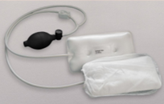
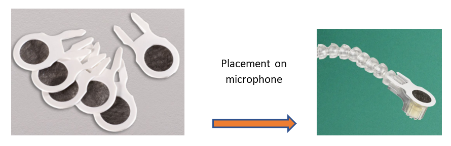
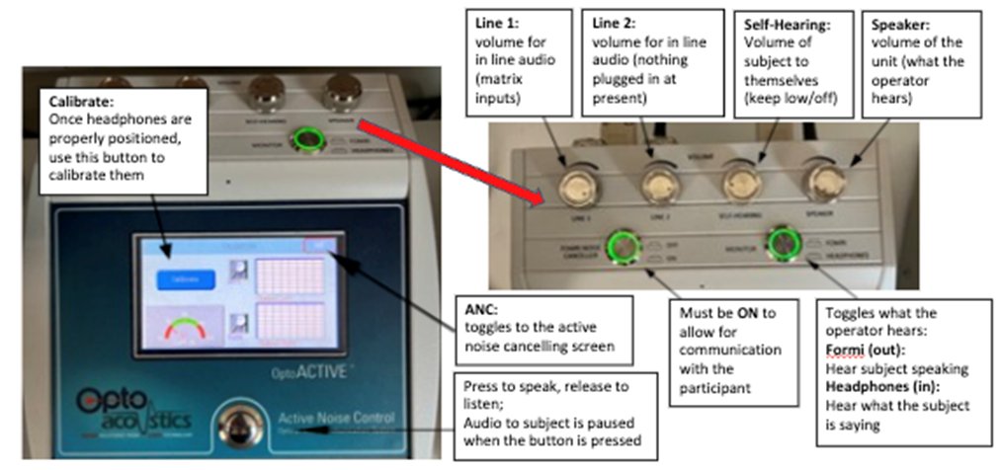

OptoAcoustics Headset
This system allows for the delivery of audio stimulus to the participant as well as two-way communication with the operator. It offers ~15dB of passive noise protection in addition to the active noise cancellation available with some pulse sequences. The headset is located on the right side of the scanner.
Participant Set Up
- Place the headphones so that the cushion portion fully surrounds each ear
- Headphones are labeled L and R
- If there is space between the headphones and the head coil, insert the inflatable pads (pictured below) on each side and inflate until the headphones are snug against the participant’s head

- After the top of the head coil has been positioned, attach the microphone to the Velcro scrip on the participant’s left hand side
- There are hygienic microphone covers that should be used – they are stored in the drawer labeled ‘Optoacoustics’.

Calibrating the Headphones
Note
Calibration checks the quality of the seal/fit between the headset and the subject’s head
- Once the subject is in the ready-to-scan position (note: table can be in or out of the bore), touch the ‘calibrate’ button to begin calibration
- No audio stimulus should be delivered, and participant should not speak during this process
- Participant will hear static noise in each ear as part of this process
- If both left and right have a green badge with white checkmark, calibration was successful
- If one or both have a red circle with an X, double check headphone positioning and repeat calibration until successful
Active Noise Cancelling (ANC)
Tip
ANC works well for EPI and DTI type sequences with relatively stable noise
- Toggle to the ANC screen and touch the ‘learn’ button
- Once the scanner triggers, the system enters a 16s learning period and then ANC will automatically begin.
- The system needs to re-learn each new sequence, but this can be skipped if repeating the same sequence consecutively.
Control Room System Set Up

Troubleshooting, Tips, and Recommendations
- If the participant can’t hear you: hold down the button for 3 seconds, and then speak. Make sure the decibel meter is reaching the green region.
- For young kids, keep the speaker volume audible in the control room during scans in case they need assistance